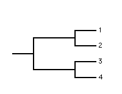
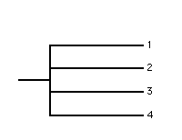
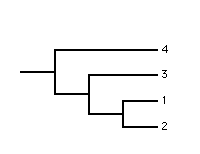

RadCon allows the user to quantify the size, resolution, balance and information content of individual trees.
This section describes the measures used.
The size of a tree is quite simply the number of leaves it contains.
The resolution of a tree is the amount of structure it contains.
|  |  |
| Tree1 | Tree2 |
In the above figure, Tree1 is fully resolved and said to be bifurcating whilst Tree2 is unresolved. Unresolved trees are sometimes referred to as bushes.
RadCon uses Colless's (1980) resolution measure which is the number of internal branches the tree contains. The measure is normalised, i.e., made to range between 0 and 1, by dividing by the maximum number of internal branches the tree can contain, which is n-2 or n-3 if the tree is rooted or unrooted, respectively, where n is the size of the tree.
The two trees above have resolutions of 2 and 0, respectively, and normalised resolutions of 1 and 0, respectively.
The balance of a tree is how symmetrical or skewed it is.
|  | |
| Tree1 | Tree2 |
In the above figure Tree1 is maximally balanced whilst Tree2 is maximally imbalanced (pectinate).
RadCon uses Colless's (1982) imbalance measure (IB), which is the sum of the absolute difference between the sizes of the two subtrees rooted at each bifurcation in the tree under consideration. The two trees above have IBs of 0 and 3, respectively. RadCon only calculates this measure for trees which are rooted and bifurcating as it is not defined for trees which are unrooted or contain polytomies.
The maximum possible imbalance of a tree, IBmax, is the imbalance it would have if it was pectinate. IBmax = (n-1)(n-2)/2 where n is the size of the tree.
The minimum possible imbalance of a tree, IBmin, is the imbalance it would have it it was as balanced as possible. The most balanced tree with four leaves, the first tree above, is completely symmetrical and IB = 0. Thus IBmin = 0 for n = 4. However try adding an additional leaf. The most balanced tree on five leaves has an imbalance of 2 and thus IBmin = 2 for n = 5. RadCon calculates calculate the minimum possible imbalance, IBmin, of a tree using a recursive formula whereby each recursion divides n (the number of leaves) into two equal or nearly equally (size difference of 1) partitions.
It seems natural to normalise IB by dividing IB by IBmax so that maximally imbalanced trees have a normalised imbalance of 1.00. However consider the example of the most balanced tree on 5 leaves. Using this method, this tree would have a normalised imbalance of 2 / 6 = 0.333. This implies that the tree is not as balanced as it could be which is not the case as the tree is the most balanced tree on 5 leaves. RadCon gives the user the option to normalise IB using a 'corrected' method which divides IB - IBmin by IBmax - IBmin. Using this corrected method the most balanced and most imbalanced trees, for any n, will have normalised imbalances of 0 and 1, respectively.
The balance of a tree is quite simply IBmax - IB and the normalised balance of a tree is 1 - the normalised imbalance (for both the uncorrected and corrected methods).
The information content of a tree is a measure of how much it reduces uncertainty regarding phylogenetic relationships.
| Tree1 | Tree2 |
In the above figure Tree1 eliminates all uncertainty regarding the phylogenetic relationships whilst Tree2 does not reduce the uncertainty at all and is clearly uninformative.
RadCon quantifies the amount of cladistic information provided by a tree, in bits, using Thorley etal's (1998) Cladistic Information Content (CIC) measure.
Thorley etal (1998) defined the CIC of a tree to be the negative log2 of the ratio of the number of bifurcating cladograms permitted by the tree to the number of possible bifurcating cladograms. A cladogram is permitted by tree if it is a possible resolution of that tree. The number of possible bifurcating cladograms is (2n-3)!! or (2n-5)!! if the trees are rooted or unrooted, respectively, where n is the size of the tree. The CIC of a tree is normalised, i.e., made to range between 0 and 1, by dividing by the maximum possible CIC, i.e. if the tree is bifurcating and only permits itself, which is log2(2n-3)!! or log2(2n-5)!! if the tree is rooted or unrooted, respectively.
The two trees above have a CICs of -log2(1/15) = 3.907 bits and -log2(15/15) = 0 bits, respectively and normalised CICs of 1 and 0, respectively.
Because the number of possible trees increases exponentially (explosively) this can cause computational problems with large n. To avoid exponent CIC is currently only calculated for trees with up to 150 leaves.
Go to the Table of Contents.
This page is maintained by joe@poissonconsulting.ca
© Copyright 1999, 2000, 2001, Joseph L. Thorley and Mark Wilkinson. All rights reserved.